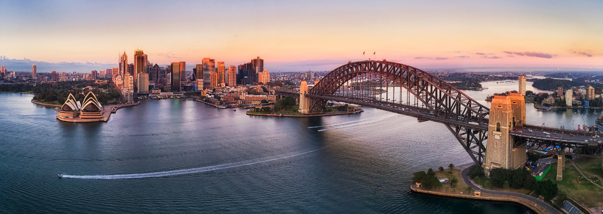

FLINS-ISKE 2026
The 17th FLINS Conference & the 21st ISKE Conference: Machine Learning and Knowledge Engineering for Decision Making
July 15-19, 2026 • Sydney, Australia

Welcome
The joint FLINS-ISKE 2026 conference will be held in Sydney - a vibrant city blending Indigenous heritage, modern innovation, and iconic harbourside landmarks. An ideal venue for a world‑class gathering.
FLINS, an acronym introduced in 1994 and originally for Fuzzy Logic and Intelligent Technologies in Nuclear Science, is now extended into a well-established international research forum to advance the foundations and applications of computational intelligence for applied research in general and for complex engineering and decision support systems.
The principal mission of FLINS is bridging the gap between machine intelligence and real complex systems via joint research between universities and international research institutions, encouraging interdisciplinary research and bringing multidiscipline researchers together.
The joint FLINS-ISKE 2026 conference will be held in Sydney, Australia. As one of the largest cities in the Southern Hemisphere, Sydney seamlessly blends its rich Indigenous heritage with modern innovation and iconic landmarks. From the historic Rocks district to its sun-kissed beaches, Sydney offers a captivating mix of tradition and contemporary vibrancy, making it an ideal venue for this prestigious event.
All accepted papers for FLINS-ISKE 2026 will be published as a proceeding by World Scientific, indexed in EI Compendex and Scopus. Selected papers will be invited for publication in SCI-indexed journals following a rigorous peer-review process.
Important Dates
| Milestone | Date |
|---|---|
| Special Session Proposal Submission Deadline | December 1, 2025 |
| Special Session Acceptance Notification | December 15, 2025 |
| Full Paper Submission Deadline | January 15, 2026 |
| Full Paper Acceptance Notification | March 1, 2026 |
| Camera-ready Paper Submission Deadline | April 1, 2026 |
| Conference Dates | July 15-19, 2026 |